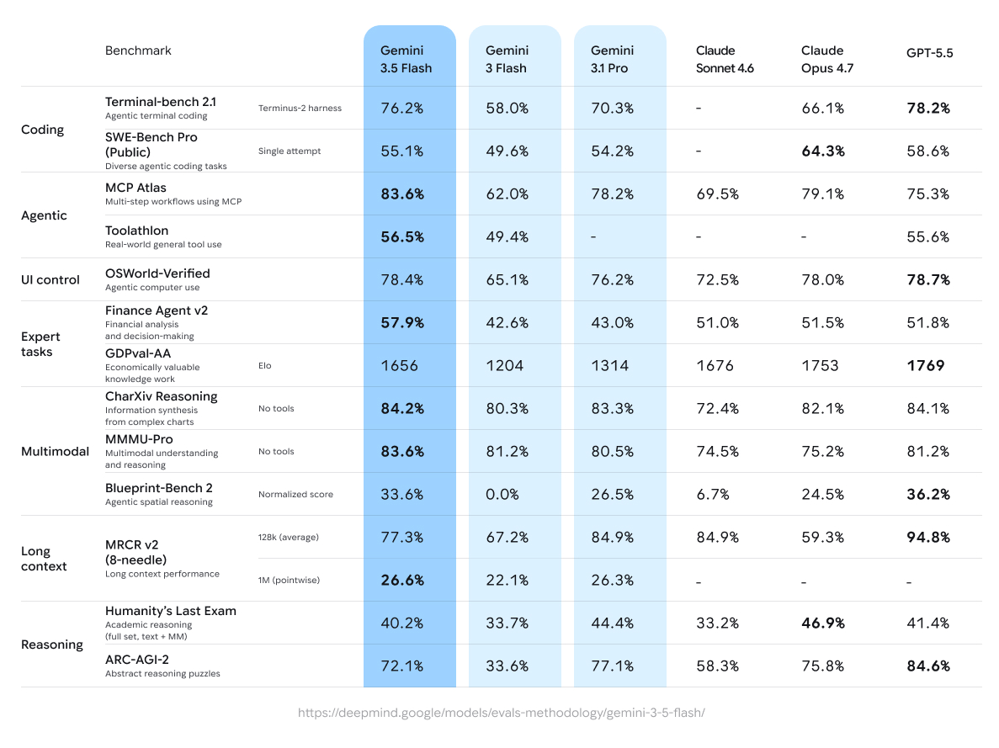
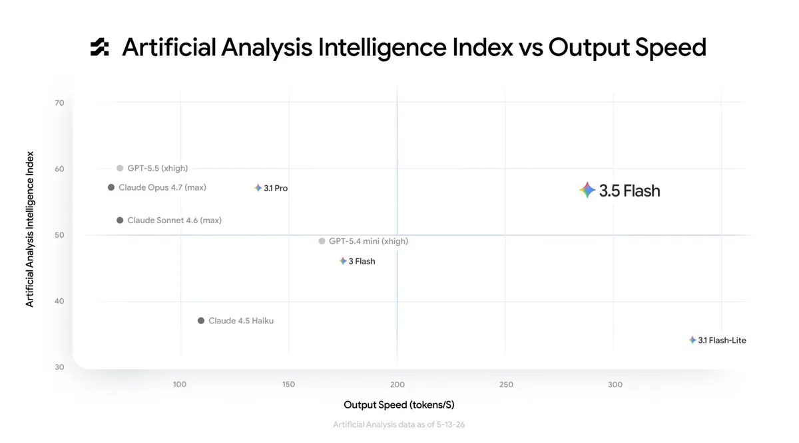
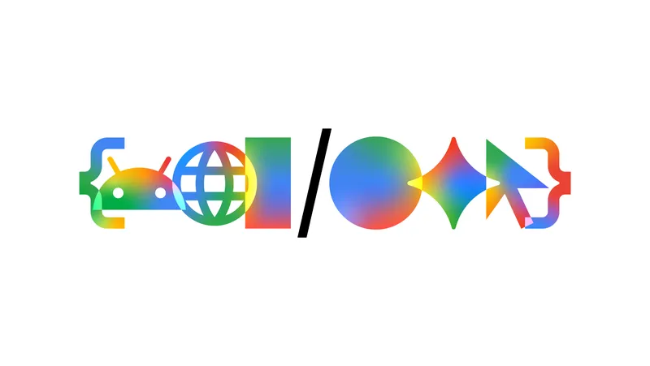

Gemini 3.5: frontier intelligence with action
May 19, 2026
|Gemini 3.5 is built to help you execute complex, agentic workflows.
Oriol Vinyals
Vice President, Google DeepMind
Noam Shazeer
Vice President, Google DeepMind

In this article
Today, we’re introducing Gemini 3.5, our latest family of models combining frontier intelligence with action. This represents a major leap forward in building more capable, intelligent agents. We’re kicking off the series by releasing 3.5 Flash. It delivers frontier performance for agents and coding, excelling at complex long-horizon tasks that deliver real-world utility.
3.5 Flash is available today to billions of people globally:
- For everyone via the Gemini app and AI Mode in Google Search
- For developers in our agent-first development platform Google Antigravity and Gemini API in Google AI Studio and Android Studio
- For enterprises in Gemini Enterprise Agent Platform and Gemini Enterprise.
We’re also hard at work on 3.5 Pro. It's already being used internally, and we look forward to rolling it out next month.
3.5 Flash: frontier performance for agents and coding
Gemini 3.5 Flash delivers intelligence that rivals large flagship models on multiple dimensions, at the speeds you have come to expect from the Flash series. It’s our strongest agentic and coding model yet, outperforming Gemini 3.1 Pro on challenging coding and agentic benchmarks like Terminal-Bench 2.1 (76.2%), GDPval-AA (1656 Elo) and MCP Atlas (83.6%), and leading in multimodal understanding (84.2% on CharXiv Reasoning). When looking at output tokens per second, it is 4 times faster than other frontier models.

Landing in the top-right quadrant of the Artificial Analysis index, 3.5 Flash delivers frontier-level intelligence at exceptional speed — proving you no longer have to trade quality for latency.

3.5 Flash: agentic tasks at scale
This balance of speed and performance makes 3.5 Flash ideal for tackling long-horizon agentic tasks. What used to take a developer days or an auditor weeks, 3.5 Flash can now help complete in a fraction of the time, often at less than half the cost of other frontier models. It rapidly plans, builds and iterates to solve real-world problems, whether it’s developing new applications, maintaining codebases or helping to prepare financial documents.
When coupled with the updated Antigravity harness, 3.5 Flash becomes a powerful engine for deploying collaborative subagents to tackle problems at scale for the most demanding use cases. Under supervision, it can reliably execute multi-step workflows and coding tasks while sustaining frontier performance.
Powered by Antigravity, 3.5 Flash executes multi-step workflows to automatically rename and categorize unstructured assets based on dynamic criteria.
Leveraging Antigravity, 3.5 Flash uses two agents to synthesize the AlphaZero paper and code a fully playable game in six hours.
3.5 Flash uses the Antigravity harness to transform a messy legacy codebase to Next.js.
3.5 Flash uses subagents to create new city landscapes in Antigravity.
3.5 Flash uses two agents: a builder and a player, working in a rapid self-improvement loop to develop a game in Antigravity.
Building on the strong multimodal foundation of Gemini 3, 3.5 Flash generates richer, more interactive web UIs and graphics.
3.5 Flash creates interactive animations for a research paper on AI Studio.
3.5 Flash turns a plain text description into interactive hardware on AI Studio.
3.5 Flash executes multiple concepts in parallel to build a full branding concept for a school fundraiser on AI Studio.
3.5 Flash generates different UX approaches for a checkout flow in just 60 seconds on AI Studio.
3.5 Flash: real-world impact
3.5 Flash’s real-world agentic capabilities are already driving meaningful progress for our developers and enterprises alike. In developing the 3.5 model series, we worked closely with industry partners to understand where toil and complexity arose in their workflows. Partners are seeing meaningful impact — from banks and fintechs automating multi-week workflows to data science teams unearthing insights amidst complex data environments.
Shopify is running subagents in parallel to analyze complex data over a long horizon for more accurate merchant growth forecasts at a global scale.
Macquarie Bank is piloting how 3.5 Flash can accelerate customer onboarding by reasoning over complex 100+ page documents, retrieving relevant information and making reliable recommendations with low latency.
Salesforce is integrating 3.5 Flash into Agentforce to reliably automate complicated enterprise tasks by deploying multiple subagents that retain context and execute complex, multi-turn tool calling.
3.5 Flash is helping Ramp enable smarter, more reliable OCR through multimodal understanding of complex invoices combined with reasoning over historical patterns.
Xero is deploying agents to autonomously manage complex, multi-week workflows, such as identifying suppliers and gathering information for 1099 tax forms, enabling small businesses to automate tedious admin tasks.
Databricks is using agentic workflows to monitor and retrieve real-time information, reason across massive datasets to diagnose issues, identify fixes and propose solutions for data scientists.
Personal AI agents: built with 3.5 Flash
3.5 Flash is now the default model for the Gemini app and AI Mode in Search globally. At I/O today, we showed how its agentic capabilities are powering new features to bring frontier-level intelligence to your daily life.
The new Gemini Spark, your personal AI agent, uses 3.5 Flash. It runs 24/7, helping you navigate your digital life, taking action on your behalf while under your direction. We’re starting to roll out Gemini Spark to trusted testers today, and we’re planning on bringing the Beta to Google AI Ultra subscribers in the US next week.
Gemini Spark uses 3.5 Flash to help accomplish these tasks
Gemini Spark uses 3.5 Flash to help accomplish these tasks
Gemini Spark uses 3.5 Flash to help accomplish these tasks
Gemini Spark uses 3.5 Flash to help accomplish these tasks
Gemini Spark uses 3.5 Flash to help accomplish these tasks
The enhanced agentic coding capabilities of 3.5 Flash are also delivering even more intelligent experiences across Search, from introducing new information agents that work for you 24/7 to unlocking more dynamic generative UI experiences. Learn more in our blog post.
Search leverages 3.5 Flash to build an interactive visual explaining Gyroid patterns.
Gemini 3.5: built with frontier safeguards
Gemini 3.5 was developed in accordance with our Frontier Safety Framework. We have strengthened our cyber and CBRN safeguards, which means it's less likely to generate harmful content, and to mistakenly refuse to answer safe queries. We achieve this with new, more advanced safety training and mitigations, including interpretability tools that help check and understand the AI's inner reasoning before it provides a response.
3.5 Flash is available today
Gemini 3.5 Flash is generally available via Google Antigravity, the Gemini API in Google AI Studio and Android Studio, Gemini Enterprise Agent Platform and Gemini Enterprise. It’s also now available to everyone in the Gemini app and AI Mode in Search. On behalf of the entire Gemini team, we can’t wait to see what you build.
Collection
I/O 2026

Get the latest news from Google in your inbox
Sign up for our newsletters with product updates, event information, special offers, and more.
Done. Just one step more.
Check your inbox to confirm your subscription.
You can also subscribe with a .
Your information will be used in accordance with Google's privacy policy. You may opt out at any time.